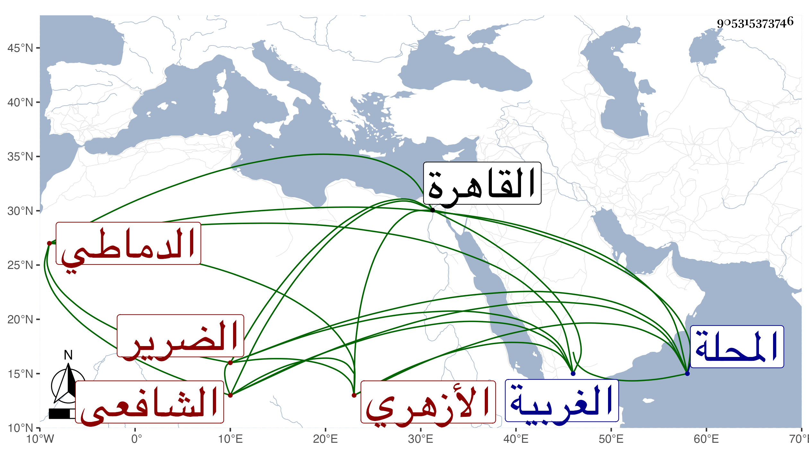

0902Sakhawi.DawLamic.ITO20230111-ara1.EIS1600.905315373746
Biography ID: 905315373746
422
حسن بن علي بن أحمد البدر أبو علي الدماطي الأزهري الشافعي الضرير ودماط من الغربية بالقرب من المحلة . قدم القاهرة فحفظ القرآن والتنبيه والمنهاج الأصلي وألفية النحو والشاطبية وتوضيح النخبة لشيخنا وأخذه بحثا عنه بقراءته ولازمه كثيرا في الرواية والدراية وأذن له في الاقراء وأثنى عليه ، وكذا أخذ الفقه عن الشرف السبكي والونائي والبلقيني والمناوي وقرأ عليه في بعض التقاسيم وحضر أيضا دروس القاياتي والأمين الاقصرائي والزين طاهر وغيرهم والقرءات عن التاج بن تمرية والعفصي والزين رضوان والشهاب السكندري وأكمل عليه والعربية عن كريم الدين العقبي ولم يمهر فيها خاصة بلى برع في الفقه والقراءات ، وتصدر للاقراء زمنا ، وانتفع به الطلبة ، وخطب بالجامع الأزهر نيابة وبغيره وسمع على الرشيدي وجماعة وحج تنزل في صوفية سعيد السعداء وكان فقيها فاضلا متقنا ضابطا متحريا مقرئا مجودا متعبدا كثير التلاوة فقيرا قانعا . مات في ربيع الأول سنة إحدى وثمانين بعد أن توعك أشهرا بحيث استثقلت به زوجته فحول إلى البيمارستان من نحو شهر ، ثم حمل إلى الاقبغاوية ميتا فبات بها وختم القرآن عنده ثم غسل من الغد وصلى عليه في مشهد حافل تقدم الزين زكريا ثم دفن بتربة سعيد السعداء عن نحو الستين ونعم الرجل رحمه الله وإيانا .
